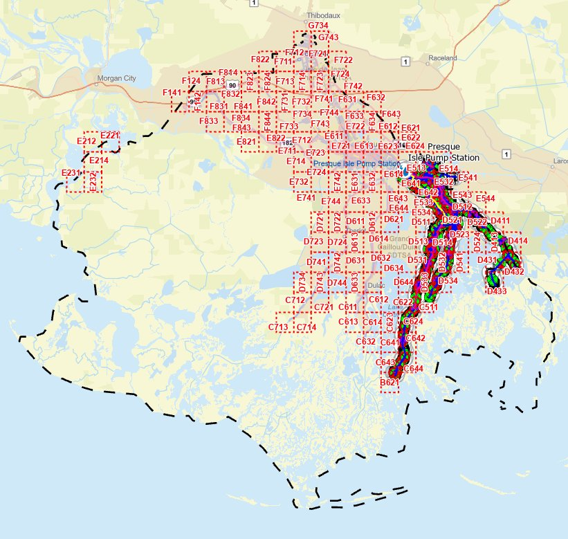
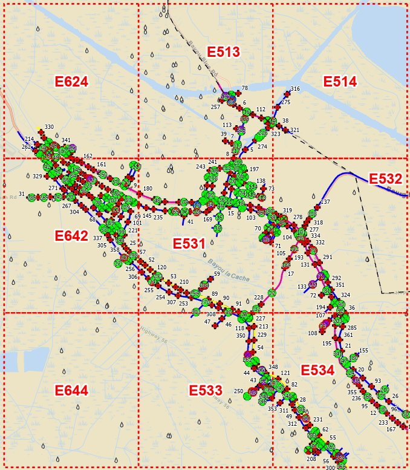
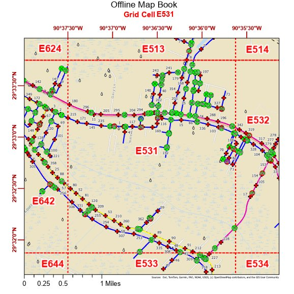
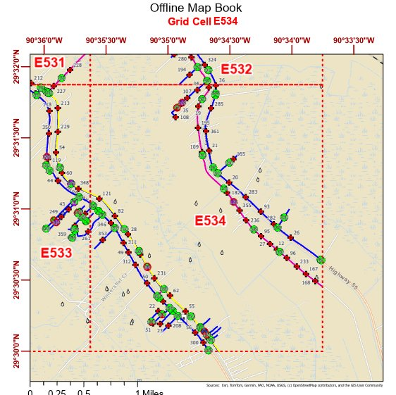
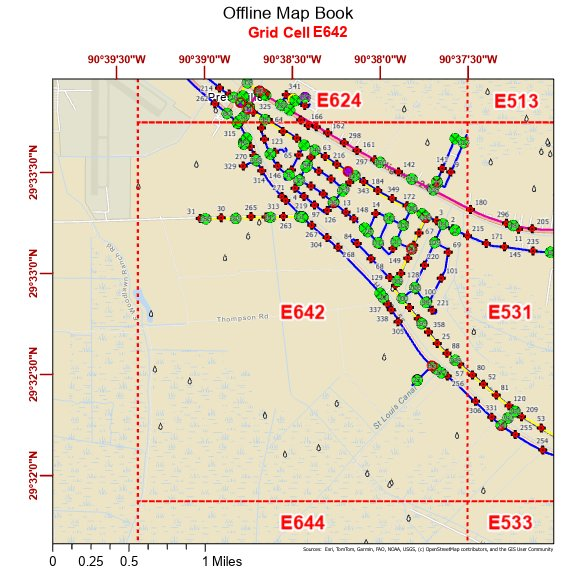

FIELD MAPS · OFFLINE GIS
Parish-Level Offline Field System in GIS
Problem: a Louisiana parish water utility feeding more than 100,000 citizens needed dependable field data access for disaster response, with no guarantee of connectivity.
Role: designed the offline system - 16 downloadable map areas, ~10 operational layers, and 9-12 quad grid cells per area packaged for fully disconnected editing in ArcGIS Field Maps.
Outcome: field crews collect and edit critical infrastructure data with zero connectivity; 16 areas deployed parish-wide.
Offline map book


Grid cells
Each grid cell ships as a standalone offline field map with full asset symbology and coordinate graticule.


